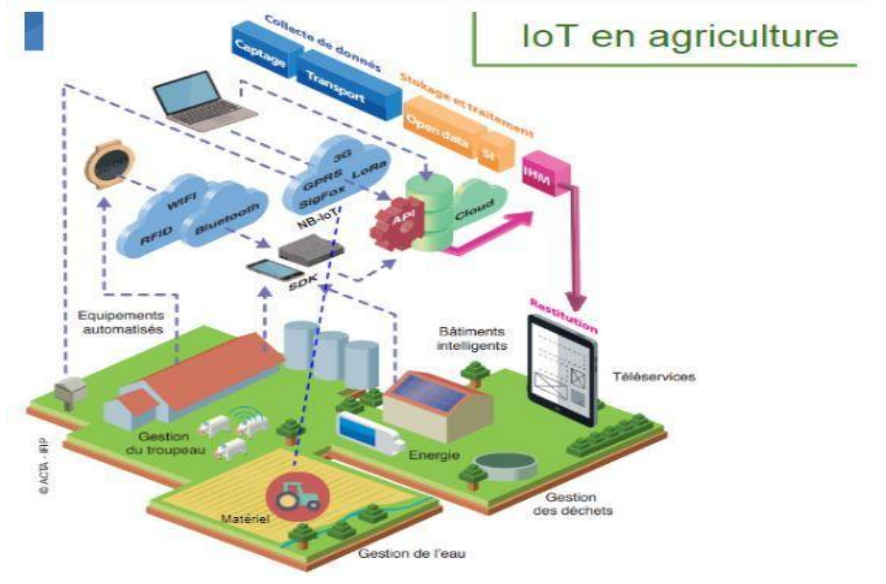

Analyse des technologies et marchés :
Le marché des capteurs agricoles devrait progresser de plus de 10% chaque année dans le monde d’ici 2020 ; en particulier tiré par les capteurs de sols et ceux liés à la pulvérisation, dont la croissance devrait atteindre 15 à 20%. Les différents leviers (techniques, économiques, environnementaux, sociaux, réglementaires et juridiques), qui contribuent à l’adoption de ces capteurs en agriculture, ont été passés en revue ; leur contribution se situe tant pour optimiser les gains que pour éviter des coûts. En regard, certains freins importants persistent : ainsi, les sociétés qui fournissent des capteurs restent compartimentées et fréquemment spécialistes d’un seul segment : prévisions météo, irrigation, robots…
Le CVT AllEnvi a interrogé plus d’une centaine d’acteurs du secteur privé et de la recherche publique, afin d’éclairer les dynamiques, identifier les tendances et proposer des thèmes de recherche et d’innovation.
Cette étude a été réalisée avec le concours de chercheurs des institutions membres de l’AllEnvi, notamment Inra, Irstea et Météo-France. Elle intègre également les réflexions issues de trois ateliers de travail et d’un séminaire, ayant réuni au total plus de cent acteurs de la thématique (industriels, agriculteurs, chercheurs et experts).
Elle fournit des données et des grilles d’analyses permettant aux décideurs d’alimenter leurs analyses stratégiques en termes de R&D, d’innovation, de collaborations public/privé, dans la perspective d’intégrer ou d’implémenter les capteurs connectés dans leur stratégie industrielle ou leur développement.
DES CAPTEURS DE PLUS EN PLUS PERFORMANTS À MOINDRE COÛT :
L’IoT en agriculture, c’est une véritable “vague déferlante”. La miniaturisation des composants électroniques, la nette amélioration de l’autonomie énergétique (batteries plus performantes), et surtout la baisse des coûts des technologies permettent une multiplication considérable de capteurs tels que les stations météo à la la parcelle ou de boîtiers de suivis de l’activité sur les matériels agricoles.
Les travaux récents laissent même envisager le développement de capteurs mesurant directement l’état physiologique de la plante (flux de sève, état hydrique de la culture).
DES RÉSEAUX DE COMMUNICATION POUR TRANSMETTRE LES DONNÉES VERS LE "CLOUD" :
Conjointement aux capteurs sur le terrain, la mise en œuvre d’objets connectés suppose également l’existence de couvertures haut débit (3G/4G et bientôt 5G) et bas débit (LoRa, SigFox, NB-IoT) pour transmettre les données vers des serveurs de stockage informatique (Cloud). IIl faut l’admettre, bien souvent, le maillage de ces réseaux de communication reste insuffisant dans les zones rurales. Cela limite leur déploiement de l’IoT sur le terrain. Les pouvoirs publics et les opérateurs de communication ont donc un rôle majeur car ils doivent mettre à disposition des infrastructures et garantir l’égalité des territoires par la connectivité.
IoTcuma en agrciculture (ACTA - IFIP, amendé par FRcuma Ouest) cuma normandes se connectent.